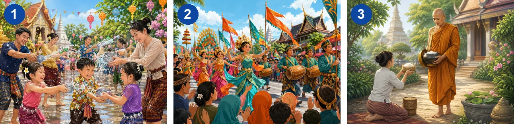
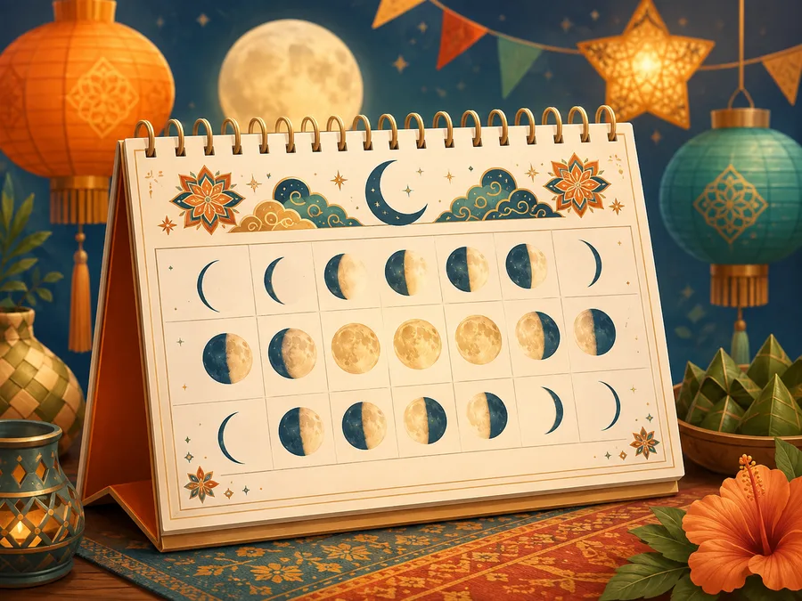
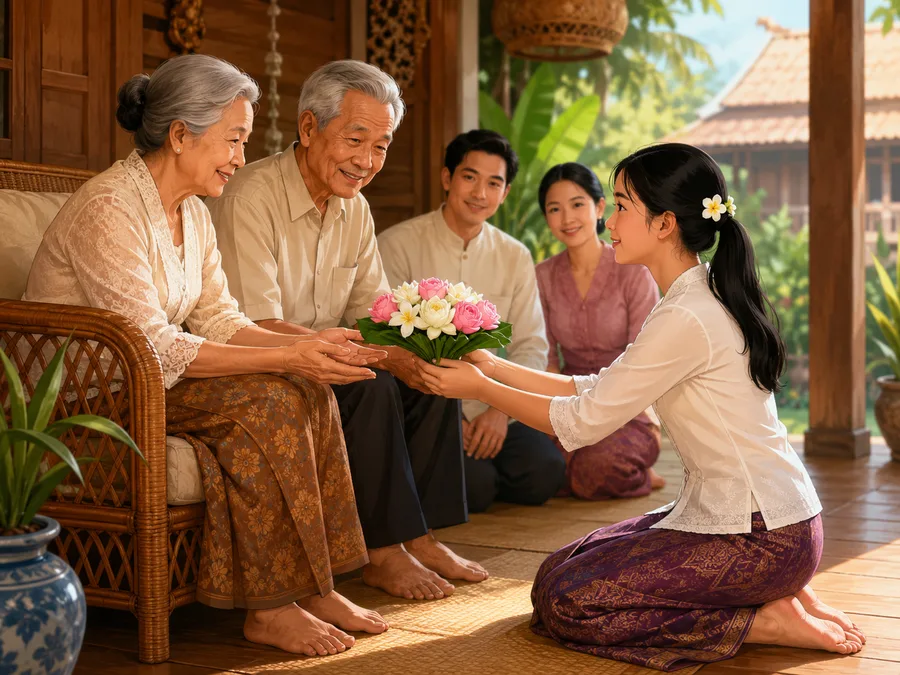
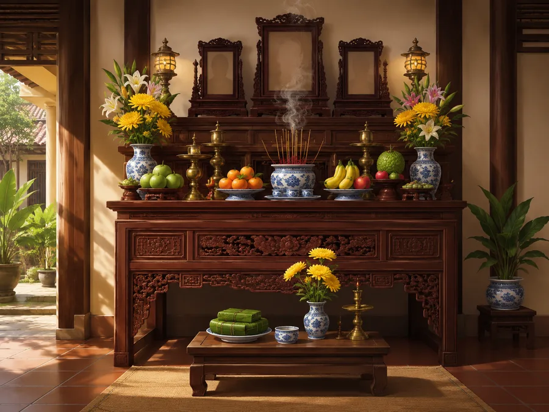
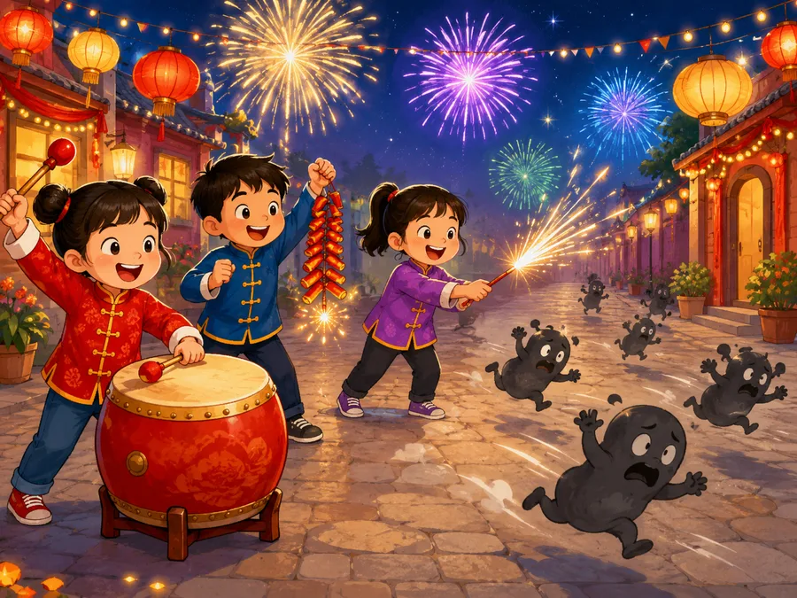
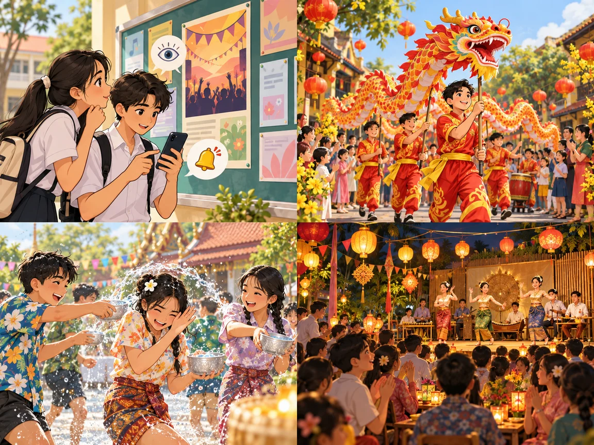
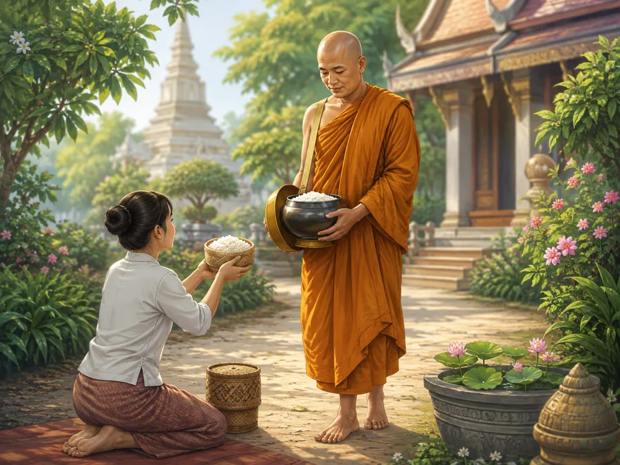
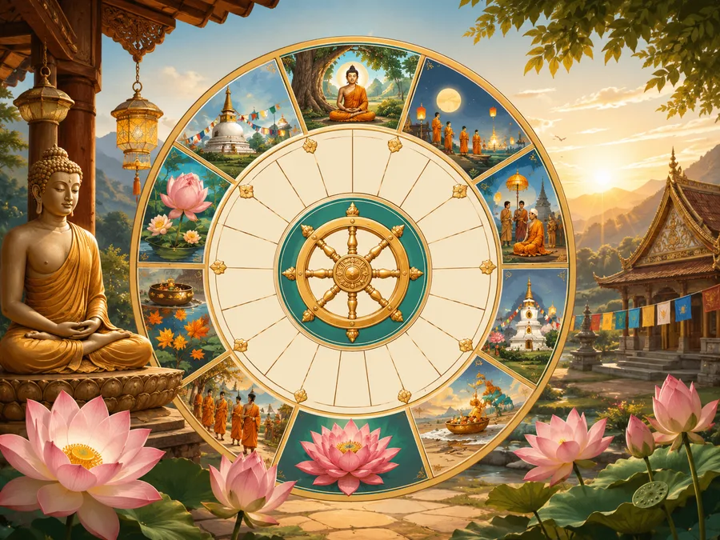

New Year festivals in ASEAN
Lesson 7 — Communication and Culture
4Compliments and New Year festivals
- 👏
give and respond to compliments
- 📚
understand words about New Year festivals
- 📋
complete a culture table from a reading
- ⚖️
compare New Year in Viet Nam and ASEAN
Warm-up
Lunar New Year around the world
5 minutesHow do Asians celebrate Lunar New Year worldwide?
No internet? Use the festival snapshots on the next slide.
What are they doing?

1 · 2 · 3 splash water · join a parade · offer rice to monks
Everyday English
Giving and responding to compliments
20 minutesLinda and Hoa
A. I’m glad you like it
B. I appreciate the compliment
C. You gave the best presentation
D. It’s excellent
A, B, C or D?
A, B, C or D?
Compliments
Giving compliments 👏
Nice work! Well done!
You did a really good job!
This is excellent. You are so good with …!
You are a great presenter! · I love your …!
Responding 😊
Thanks for saying that.
I appreciate that.
Thank you. That means a lot to me.
I’m grateful for the kind words.
Make similar conversations
- 📄
Situation 1
A has completed an excellent report on ASEAN. B gives compliments; A responds.
- 🎤
Situation 2
B has organised a workshop on skills for future leaders in ASEAN. A gives compliments; B responds.
A report on ASEAN
Culture
New Year festivals in ASEAN
12 minutes
lunar calendar
(n phr) /ˌluːnə ˈkælɪndə(r)/ âm lịchfestivity
(n) /feˈstɪvəti/ hoạt động lễ hội The festivities take place in April.
honour
(v, n) /ˈɒnə(r)/ tôn kính; sự tôn kính
ancestor
(n) /ˈænsestə(r)/ tổ tiênprosperity
(n) /prɒˈsperəti/ sự thịnh vượng
scare away
(phr v) /skeər əˈweɪ/ xua đuổi
parade
(n, v) /pəˈreɪd/ cuộc diễu hành; diễu hànhcelebration
(n) /ˌselɪˈbreɪʃn/ sự/lễ ăn mừng, hoạt động đón mừng
monk
(n) /mʌŋk/ nhà sưsplash
(v, n) /splæʃ/ té, tạt nước; sự bắn nước
Buddhist calendar
(n phr) /ˌbʊdɪst ˈkælɪndə(r)/ Phật lịchNew Year Festivals in ASEAN
In ASEAN, besides welcoming the New Year on January 1, there are several cultures that celebrate New Year’s Day later in the year. For example, Viet Nam, Singapore, Indonesia and parts of Malaysia follow the lunar calendar so their New Year festivities often take place in January or February. Lunar New Year is a time for them to honour ancestors, get together with family and friends, have a big family meal, and wish one another prosperity for the year to come. The streets and houses are decorated, and fireworks are lit to scare away bad luck. There are also parades, street parties, and art performances in the new year celebrations.
New Year Festivals in ASEAN
People in Laos, Cambodia, Thailand, and Myanmar celebrate the arrival of the New Year according to the Buddhist calendar. Their New Year’s celebrations are in April. People in these countries follow traditions such as offering rice to Buddhist monks to show their respect and receiving wishes for good luck and health from them. They decorate their homes, cook traditional dishes, and splash each other with water. There are also art performances, folk games, and dancing. In these cultures, it is believed that water will wash away bad luck and ill health from the old year and allow people to start the new year fresh.
Countries and time
Lunar New Year
Countries: (1) Viet Nam, Singapore, Indonesia and parts of Malaysia
Time: January or February
Buddhist calendar
Countries: Laos, Cambodia, Thailand & Myanmar
Time: (2) April
Activities
Lunar New Year
(3) honour ancestors · family meals · wish prosperity · decorations, fireworks · parades, street parties, art performances
Buddhist calendar
(4) offer rice to monks · decorate homes · cook traditional dishes · splash water · art performances, folk games, dancing
New Year in Viet Nam and other ASEAN countries
- 🟰
One similarity
Both … · Like Singapore, Viet Nam …
- ↔️
One difference
However, … · while …
- 💭
One opinion
I think … is the most interesting because …
Our Tet
Extra discussion
6 minutesLunar New Year in Viet Nam
1. Is Lunar New Year important to Vietnamese people? Why?
2. What are the traditions of Lunar New Year?
3. List some activities you would do in the Tet holiday.
Visiting relatives is … · I enjoy … · We usually …
Before you leave…
1. A new word I remember: ……
2. One festival activity: ……
3. A compliment I can say: ……
Homework
1. Do the Communication and Culture exercises in the workbook.
2. Write 5 sentences comparing Tet and another ASEAN New Year festival.
3. Get ready for Lesson 8 — Looking back and Project.